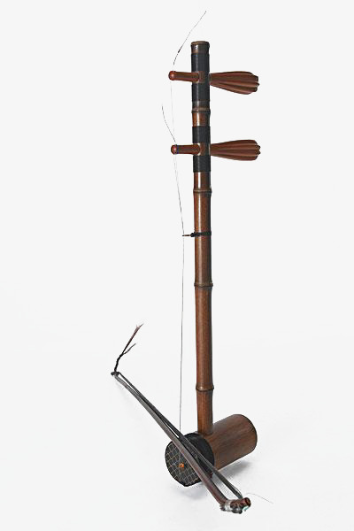

川剧乐器胡琴

胡琴是二黄与西皮腔的统称。因其主要伴奏乐器是“琴”，故统称胡琴。《燕兰小谱》卷五记载：“蜀伶新出琴腔，……其器不用笙笛，以胡琴为主，月琴应之，工尺咿唔如话”，可以说是四川胡琴腔的注脚。
胡琴是二黄与西皮腔的统称。因其主要伴奏乐器是“琴”，故统称胡琴。《燕兰小谱》卷五记载：“蜀伶新出琴腔，……其器不用笙笛，以胡琴为主，月琴应之，工尺咿唔如话”，可以说是四川胡琴腔的注脚。胡琴腔约在乾隆年间就已经形成了。